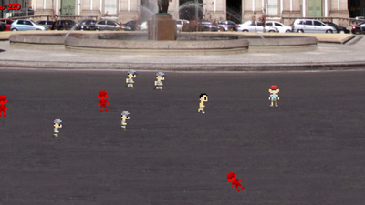
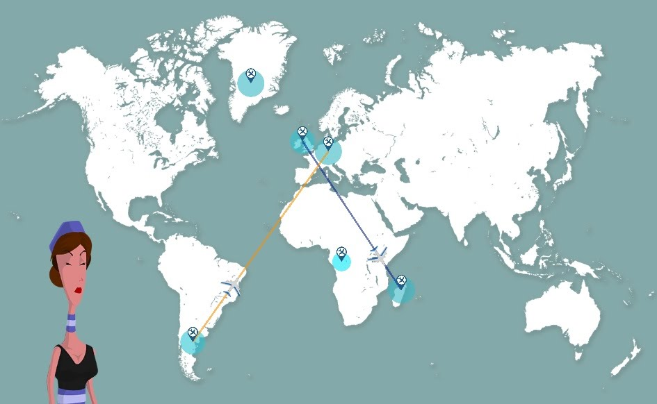
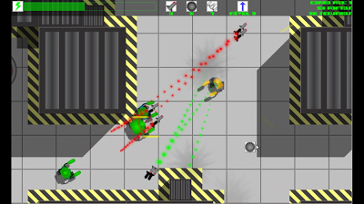
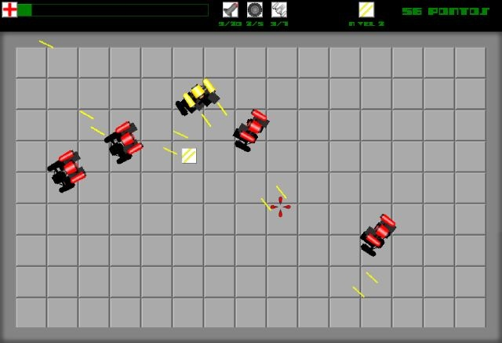
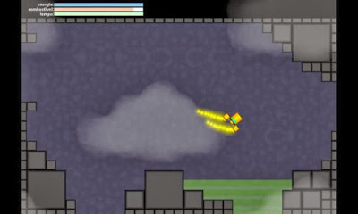
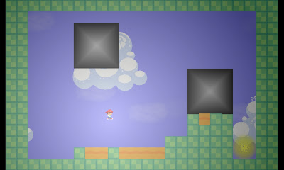
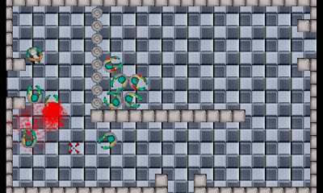

GAMES
Burglar Olympics
This game was made for the #BotafogoGameJam. Check it out the newest Olympic game to be presented at Rio 2016 Summer Olympics with the following categories: Athletics, Cycling, Both, With your money and Just don't get caught by those cops...
time taken: 48 hours
Moca Nova

A tribe from Amazon carries out a ritual for female teenagers in their first period. In this time, they are able to see demons in men wearing a mystic mask.
time taken: 48 hours
Kaplansky
A project in continuous development to be a big extension of Bad Piggies ideas.
time taken: On Going
Lumber Jackeline
Jackeline wants to be a lumberjack, but she is cursed and, without a beard, she can't become one. Now she must overcome a few challenges to achieve her truest dream.
This game was made in 2015 Global Game Jam, with me and Sinextra guys.
time taken: 2 days
Connected World Airlines
Connected world airlines is a game that I made with 4 friends to ludum dare 30 The game can be played online.
time taken: 3 days
Calabouco do Android
I participated in the production of this game with sinextra game studio, this advergame, developed for calabouco do android,it's a infinity runner, canabalt/jetpack joyride like. The game is playable online both in calabouco's website and newgrounds.
time taken: 1 month
I Want My Parrot
I Want My Parrot was my first commercial participation in game production, I participated in the development with Sinextra Game Studio. This is about the journey of Captain Pierre whose parrot was stolen, suposely by Empire.
Game canceled.
time taken: 1 life!
Arena Robo 2 - Segunda Carga
This game, made to e-games 2011 contest, take me into 5th national position as finalist.
Download - 13,6 MBtime taken: 2 months
Arena Robo
In Arena Robo, your mission is to blow it up and eliminate as many robots as possible, this game was made for a forum contest, is actually one of my favorites.
Download - 4,9 MBtime taken: 3 days
Relampago 14
This game was another simple test drive to create an open-world metroidvania game.
Download - 7,2 MBtime taken: 5 days
Super Desafio
Super Desafio is a simple platformer game with extremely high difficulty, hence the name, which can take you to exhaustion. A lot of skill are required to achieve the end.
Download - 20,8 MBtime taken: 1 week
X-58
X-58 was my first top-down shooter test, in which the player controls Cezar, a special agent sent to hold a wave of zombies (what innovative!). Had help of Thiago R. Siqueira for sound design.
Download - 9,8 MBtime taken: 2 weeks